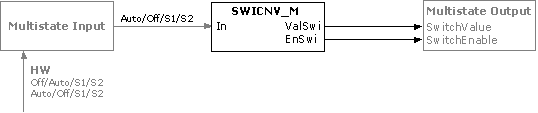

SWICNV_M：将转换器切换到多态
SWICNV_M (FC439) 用于连接标准化手动开关。
功能性
该块将手动开关的二进制或多态输入信号转换为二进制和多态输出。

Function table
Inputs | Outputs | |
In (Multistate) | EnSwi (Boolean) | ValSwi (Multistate) |
1（自动） | 0（否） | 1（关） |
2（关闭） | 1（是） | 1（关） |
3（第一阶段） | 1（是） | 2（第一阶段） |
4（第二阶段） | 1（是） | 3（第二阶段） |
输入
Pin | E | Description |
In | pa | 输入。 |
输出
Pin | E | Description |
EnSwi | a | 开关使能。 |
ValSwi | a | 开关值。 |
输入值
Pin | Description | Data type | Default value | E.g. Engineering unit or Text group | Min. | Max. |
In | 输入。 | 多态 | 1（自动） | 自动、关闭...Stage15 |
|
|
输出值
Pin | Description | Data type | Default value | E.g. Engineering unit or Text group | Min. | Max. |
EnSwi | 开关使能。 | 布尔值 | 0（否） | 不，是 |
|
|
ValSwi | 开关值。 | 多态 | 1（关） | 关闭...Stage15 |
|
|
工程
如果输入 = 1 则 ;--自动
值：=1；启用:=假
别的
值：=（输入-1）；启用：=真
结束如果
Important
[SWICNV_M] 处输入 [In] 的文本组由序列 Auto/Off/On. 表征。如果输入是用户定义的，则必须首先显示 Auto。
过程响应
标准（参见General rules and information).
故障排除
标准（参见General rules and information).